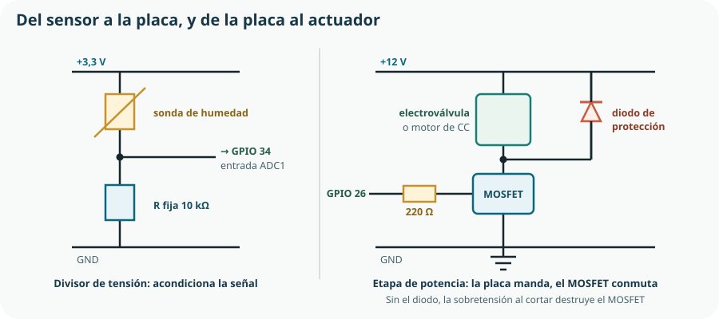

Este tema cierra el Bloque D y es el puente hacia todo lo que viene después. Los bloques E y F van a programar una placa para que lea el mundo y actúe sobre él, y entre la placa y el mundo hay electrónica: un divisor que adapta lo que mide un sensor y un interruptor electrónico que amplifica lo que ordena una salida. Sin estas dos piezas, un programa perfecto no puede encender ni una bombilla.
- distinguir señal de potencia y señal de información, y trabajar con niveles lógicos;
- identificar resistencias, condensadores y el relé en un esquema y decir qué hacen;
- explicar el comportamiento del diodo y calcular la resistencia limitadora de un LED;
- usar un transistor o un MOSFET como interruptor de un actuador, y dimensionar su resistencia de puerta;
- explicar por qué toda bobina necesita un diodo de protección;
- clasificar un sensor en analógico o digital y acondicionar su señal con un divisor o una resistencia de polarización;
- explicar qué hace un convertidor analógico-digital y qué significan sus bits y su resolución;
- interpretar los datos críticos de una hoja de características;
- trabajar con seguridad en montajes electrónicos de baja tensión.
1. Señal eléctrica y señal electrónica
El Tema 10 trataba circuitos cuyo objeto era transportar energía: llevar vatios de la batería al motor. La electrónica trata circuitos cuyo objeto es transportar información: llevar un dato de un sensor a un procesador. Las magnitudes son las mismas; los órdenes de magnitud, completamente distintos.
Circuito de potencia
Amperios, vatios y calor. Lo que importa es el rendimiento y el dimensionado. Cables gruesos, protecciones, disipadores.
Circuito de señal
Miliamperios o microamperios. Lo que importa es la fidelidad del dato: ruido, deriva y resolución. Cables finos, apantallados si hace falta.
Niveles lógicos
Un circuito digital no maneja infinitos valores: solo dos estados. El ESP32 trabaja con lógica de 3,3 V, lo que significa:
| Estado | Intervalo aproximado | Significado |
|---|---|---|
| Nivel bajo · 0 | de 0 V a unos 0,8 V | La entrada se interpreta como cero. |
| Zona indeterminada | entre 0,8 V y 2,0 V | El resultado no está garantizado: hay que evitar quedarse aquí. |
| Nivel alto · 1 | de unos 2,0 V a 3,3 V | La entrada se interpreta como uno. |
| Por encima de 3,6 V | — | Fuera de especificación: puede destruir el pin. |
2. Componentes pasivos
Un componente pasivo no aporta energía al circuito: la disipa, la almacena o la devuelve.
| Componente | Qué hace | Magnitud | Uso en el KR-1 |
|---|---|---|---|
| Resistencia fija | Limita la corriente y reparte tensión. | Ω | Limitadora del LED, de puerta del MOSFET y fija del divisor. |
| Resistencia variable (potenciómetro) | Resistencia ajustable a mano. | Ω | Ajustar el umbral de riego sin reprogramar. |
| Resistencia dependiente (LDR, termistor) | Su resistencia cambia con luz o temperatura: es un sensor. | Ω | Detectar si es de día antes de regar. |
| Condensador | Almacena carga; se opone a los cambios rápidos de tensión. | F (µF, nF, pF) | Estabilizar la alimentación cuando la válvula arranca. |
| Bobina | Almacena energía en su campo magnético; se opone a los cambios de corriente. | H (mH) | En corriente continua, aparece como el devanado del relé y de la electroválvula. |
3. El diodo y el LED
Un diodo conduce la corriente en un sentido y la bloquea en el contrario. Es el componente semiconductor más simple y el más útil: con esa única propiedad se rectifica, se protege y se orienta la corriente.
| Función | Cómo se monta | Para qué |
|---|---|---|
| Rectificar | En serie, o en puente de cuatro diodos. | Convertir alterna en continua: es el corazón de cualquier cargador. |
| Proteger de polaridad inversa | En serie con la alimentación. | Que conectar la batería al revés no destruya nada. |
| Proteger de sobretensión | En paralelo con una bobina, en sentido inverso. | Absorber el pico al cortar. Sección 5. |
| Emitir luz (LED) | En serie con una resistencia limitadora. | Señalizar el estado del sistema. |
Un diodo en conducción no es un cortocircuito: mantiene entre sus bornes una tensión umbral casi constante, unos 0,7 V en los de silicio y entre 1,8 y 3,2 V en un LED según su color. Esa caída es la que permite calcular la resistencia limitadora:
R = (Valim − VLED) / ILED la resistencia absorbe la tensión que el LED no consume
| Paso | Operación | Resultado |
|---|---|---|
| Datos | LED verde: V = 2,1 V, I deseada = 8 mA | — |
| Tensión a absorber | 3,3 − 2,1 | 1,2 V |
| Resistencia teórica | 1,2 / 0,008 | 150 Ω |
| Valor comercial | Serie normalizada | 150 Ω exacto |
| Potencia disipada | 1,2 · 0,008 | 0,010 W — cualquier resistencia de 1/4 W sobra |
| Comprobación del pin | 8 mA frente al máximo de unos 20 mA por pin | Dentro de especificación ✓ |
4. Transistor y MOSFET como interruptor
Aquí está la respuesta a la pregunta guía. Un transistor permite que una señal pequeña controle una corriente grande. Tiene dos modos de uso, y en este curso nos interesa sobre todo el segundo.
Como amplificador
Trabaja en la zona lineal: la corriente de salida es proporcional a la de entrada. Es la base del audio y de la instrumentación. Se menciona y no se desarrolla.
Como interruptor
Trabaja en dos estados: corte —no conduce— y saturación —conduce casi como un cable—. Es lo que necesita una placa para encender un actuador, y es el 99 % de lo que haremos.

Transistor bipolar o MOSFET
| Transistor bipolar (BJT) | MOSFET | |
|---|---|---|
| Terminales | Base, colector, emisor | Puerta, drenador, fuente |
| Se controla con | Corriente de base | Tensión de puerta |
| Consumo del control | Del orden de mA: carga el pin | Casi nulo en régimen estacionario |
| Pérdida al conducir | Unos 0,2 a 0,7 V, que se convierten en calor | Muy baja: se comporta como una resistencia pequeña |
| Corriente que admite | Cientos de mA en los pequeños | Varios amperios incluso en encapsulados modestos |
| Cuándo elegirlo | Cargas pequeñas, circuitos sencillos, muy barato | Actuadores, motores, todo lo que tire de corriente |
5. El relé y el diodo de protección
Un relé es un interruptor accionado por un electroimán: una bobina atrae un contacto mecánico. Su virtud decisiva es el aislamiento galvánico: el circuito de mando y el de potencia no comparten ningún conductor, de modo que un problema en uno no alcanza al otro.
| Criterio | Relé | MOSFET |
|---|---|---|
| Aislamiento entre mando y potencia | Total | Ninguno: comparten masa |
| Tipo de carga | Cualquiera, también alterna | Solo continua |
| Velocidad de conmutación | Milisegundos: no sirve para PWM | Microsegundos: es el componente del PWM |
| Vida útil | Limitada: los contactos se desgastan | Prácticamente ilimitada |
| Consumo propio | La bobina consume mientras esté activada | Despreciable |
| Ruido | Chasquido audible | Silencioso |
Por qué toda bobina necesita un diodo
Una bobina se opone a los cambios de corriente. Mientras está alimentada, almacena energía en su campo magnético. Cuando el interruptor corta, esa corriente no puede desaparecer de golpe: la bobina genera la tensión que haga falta para mantenerla, y esa tensión puede ser de decenas o cientos de voltios, con polaridad invertida.
6. Sensores y acondicionamiento de señal
Un sensor convierte una magnitud física en una magnitud eléctrica. Y casi nunca la entrega en la forma que la placa necesita: entre los dos hace falta un acondicionamiento.
| Tipo | Qué entrega | Ejemplos | Acondicionamiento |
|---|---|---|---|
| Resistivo | Una resistencia variable. | LDR, termistor NTC, sonda de humedad resistiva. | Divisor de tensión con resistencia fija. |
| Analógico de tensión | Una tensión proporcional a la magnitud. | Sonda capacitiva de humedad, sensor de corriente. | Directo a la entrada ADC, comprobando el margen. |
| Digital de contacto | Abierto o cerrado. | Pulsador, final de carrera, sensor de nivel. | Resistencia de polarización y filtrado de rebotes. |
| Digital con protocolo | Un número por un bus de datos. | Sensor de temperatura y humedad ambiente, barómetro. | Ninguno eléctrico: se lee con una biblioteca. |
Resistencias de polarización
Un pulsador que solo conecta el pin a masa deja el pin «al aire» cuando está sin pulsar, y una entrada al aire capta ruido y da lecturas aleatorias. La solución es una resistencia de polarización que fije el nivel de reposo:
Pull-up
Resistencia entre el pin y la alimentación. En reposo el pin lee 1; al pulsar se une a masa y lee 0. Es la configuración habitual, y el ESP32 la tiene incorporada por programa.
Pull-down
Resistencia entre el pin y masa. En reposo lee 0; al pulsar se une a la alimentación y lee 1. Más intuitiva de leer y algo menos frecuente.
7. Conversión analógico-digital
La magnitud física es continua; el procesador solo maneja números. El convertidor analógico-digital —ADC— hace la traducción: mide una tensión y la expresa como un número entero.
niveles = 2n n es el número de bits del convertidor
resolución = Vref / 2n el escalón mínimo de tensión que puede distinguir
| Bits | Niveles | Resolución | Dónde aparece |
|---|---|---|---|
| 8 | 256 | 12,9 mV | Microcontroladores muy sencillos. |
| 10 | 1024 | 3,2 mV | Arduino UNO. |
| 12 | 4096 | 0,81 mV | ESP32: el del KR-1. |
| 16 | 65 536 | 0,05 mV | Instrumentación de medida. |
8. Circuitos electrónicos básicos
El currículo pide interpretar «circuitos básicos». Estos cuatro cubren prácticamente todo lo que aparece en un montaje de este nivel, y los cuatro se reconocen de un vistazo cuando se sabe qué buscar.
Rectificación
Uno o cuatro diodos convierten alterna en continua; un condensador alisa lo que queda. Es el interior de cualquier alimentador.
Temporización
Una resistencia y un condensador: el condensador tarda un tiempo previsible en cargarse. Es la base de los retardos analógicos y del filtrado de rebotes.
Señalización
LED más resistencia limitadora. Sencillo y decisivo: un sistema sin indicador de estado es imposible de depurar en campo.
Control de un actuador
Entrada lógica, resistencia de puerta, MOSFET, actuador y diodo de protección. Es el esquema de la sección 4 y el que se repetirá en los bloques F y G.
Cómo leer un esquema electrónico sin perderse
- Localiza la alimentación y la masa. Toda la lectura se organiza de arriba abajo: lo positivo arriba, la masa abajo.
- Separa las etapas. Casi todo esquema se divide en alimentación, entrada de señal, procesamiento y salida de potencia.
- Sigue una etapa entera antes de pasar a la siguiente, como en el Tema 3.
- Busca los componentes de protección. Los diodos, los fusibles y las resistencias en serie cuentan de qué tenía miedo quien lo diseñó, y eso enseña mucho.
- Comprueba las referencias. R1, C2, Q1, D3 remiten a la lista de materiales, y el esquema y la lista se leen juntos.
9. Leer una hoja de características
La hoja de características es la fuente primaria del Tema 1 aplicada a la electrónica: el documento en el que el fabricante se compromete. Tiene decenas de páginas y casi siempre bastan cinco datos.
| Dato | Qué significa | Por qué importa |
|---|---|---|
| Valores máximos absolutos | Límites que no se deben alcanzar nunca. | No son condiciones de trabajo: son el punto de destrucción. Se diseña bien por debajo. |
| Condiciones de funcionamiento | Intervalo en el que el fabricante garantiza el comportamiento. | Es el intervalo real de diseño. |
| Típico, mínimo y máximo | Tres columnas para el mismo parámetro. | Se dimensiona con el peor caso, no con el típico. Es el error del Tema 1. |
| Tensión de puerta (en un MOSFET) | Tensión necesaria para conducir plenamente. | Decide si sirve con lógica de 3,3 V o se quedará a medio conducir. |
| Encapsulado y disipación | Forma física y calor que puede evacuar. | Determina si necesita disipador y si cabe en la placa. |
10. Seguridad eléctrica en el aula
El Tema 6 fijó el orden de prevención. Aquí se concreta para el montaje electrónico, donde el riesgo para las personas es bajo y el riesgo para el material, alto.
| Regla | Motivo |
|---|---|
| Nunca la tensión de red. Se trabaja con 3,3 V, 5 V y 12 V. | Los 230 V del enchufe son mortales y no tienen ningún papel en este curso. |
| Montar y modificar siempre sin tensión. | Un cable que se mueve con el circuito alimentado es un cortocircuito esperando. |
| Comprobar la polaridad antes de alimentar. | Invertir la alimentación destruye la mayoría de los integrados al instante. |
| Revisar la tensión de la fuente antes de conectar. | Alimentar con 12 V un módulo de 5 V lo quema sin remedio. |
| Fusible en la línea de potencia. | Acota el daño de un cortocircuito a un componente de céntimos. |
| Masas unidas entre etapas. | Sin masa común, las señales no tienen referencia y el sistema es indepurable. |
| Cuidado con las baterías de litio. | Un cortocircuito entrega corrientes enormes: calor, incendio y gases. No se perforan ni se cargan sin su circuito de protección. |
| Soldar con ventilación y lavarse las manos al acabar. | Humos del fundente; estaño sin plomo. |
| Tocar el componente antes de tocar el teclado. | Si está caliente, algo va mal: es el mejor indicador de avería que existe. |
Comprueba lo que has aprendido
Este tema se demuestra con las dos interfaces del KR-1 montadas, medidas y documentadas.
| Aspecto | Qué debes demostrar | Evidencias posibles |
|---|---|---|
| Componentes | Que identificas cada componente en un esquema y explicas su papel. | Esquema del KR-1 con los componentes referenciados y el papel de cada uno en una línea. |
| Cálculo electrónico | Que dimensionas una resistencia limitadora y compruebas los límites del pin. | Cálculo del LED con valor comercial elegido y comprobación de la corriente del pin. |
| Etapa de potencia | Que la placa gobierna el actuador con un interruptor electrónico y con protección. | Montaje con MOSFET, resistencia de puerta y diodo de recirculación, medido en los dos estados. |
| Sensor y ADC | Que acondicionas el sensor, lo calibras y conoces los límites del convertidor. | Divisor calculado, sonda en ADC1, dos puntos de calibración y lecturas promediadas. |
| Documentación técnica | Que localizas en la hoja de características los datos que deciden el diseño. | Ficha resumen del MOSFET con los cinco datos y la potencia disipada calculada. |
Cierre del Bloque D: con el divisor y la etapa de potencia montados, el KR-1 ya puede leer el mundo y actuar sobre él. Falta lo que decide cuándo: el programa. Eso es el Bloque E.
Glosario del tema
- Acondicionamiento de señal
- Conjunto de circuitos que adaptan la salida de un sensor a lo que puede leer un procesador.
- Aislamiento galvánico
- Separación eléctrica total entre dos circuitos, que no comparten ningún conductor.
- Cátodo y ánodo
- Terminales de un diodo; la corriente circula del ánodo al cátodo y no en sentido contrario.
- Componente pasivo
- Componente que no aporta energía al circuito: la disipa, la almacena o la devuelve.
- Condensador de desacoplo
- Condensador situado junto a un circuito para suministrar los picos de corriente y estabilizar su alimentación.
- Convertidor analógico-digital (ADC)
- Circuito que traduce una tensión a un número entero.
- Corte y saturación
- Los dos estados de un transistor usado como interruptor: no conduce y conduce plenamente.
- Diodo de recirculación
- Diodo en paralelo con una bobina que ofrece un camino a la corriente al cortar, evitando el pico de tensión.
- Hoja de características
- Documento del fabricante con los valores garantizados y los límites de un componente.
- LDR
- Resistencia cuyo valor depende de la luz que recibe.
- MOSFET
- Transistor controlado por tensión, muy eficiente como interruptor de cargas de corriente continua.
- Nivel lógico
- Intervalo de tensión que un circuito digital interpreta como cero o como uno.
- Optoacoplador
- Componente que transmite una señal mediante luz, manteniendo el aislamiento galvánico.
- Rebote
- Sucesión de aperturas y cierres rápidos que produce un contacto mecánico al conmutar.
- Relé
- Interruptor mecánico accionado por un electroimán, con aislamiento entre mando y potencia.
- Resistencia de polarización
- Resistencia que fija el nivel de reposo de una entrada digital, hacia la alimentación o hacia masa.
- Resolución
- Escalón mínimo de tensión que un convertidor puede distinguir.
- Sensor
- Dispositivo que convierte una magnitud física en una magnitud eléctrica.
- Tensión umbral
- Tensión que un diodo mantiene entre sus bornes cuando conduce.
- Termistor
- Resistencia cuyo valor depende de la temperatura.
- Transistor
- Componente semiconductor que permite que una señal pequeña controle una corriente mucho mayor.
Resumen esencial
- Un circuito de potencia transporta energía y uno de señal transporta información; las magnitudes son las mismas y los órdenes de magnitud, muy distintos.
- El ESP32 trabaja con lógica de 3,3 V: por encima de 3,6 V en un pin se sale de especificación y se puede destruir.
- Un condensador de desacoplo evita que el arranque del actuador reinicie la placa; es la avería inexplicable más frecuente.
- Las bobinas apenas cuentan como componente en corriente continua, pero aparecen como devanado de relés, electroválvulas y motores.
- Un diodo conduce en un sentido y bloquea en el otro; en conducción mantiene una tensión umbral, y por eso un LED necesita resistencia limitadora.
- Como interruptor, un MOSFET se controla por tensión, no consume del pin y disipa muy poco; hay que comprobar que sirve para lógica de 3,3 V.
- La resistencia de puerta no limita corriente de control: limita el pico instantáneo de la conmutación y protege el pin.
- Si el actuador tiene bobina, lleva diodo de recirculación. Sin él, el pico al cortar destruye el interruptor electrónico.
- Un relé aporta aislamiento galvánico y sirve para cualquier carga, pero es lento, se desgasta y consume mientras está activado.
- Un sensor resistivo se acondiciona con un divisor; una entrada digital necesita resistencia de polarización y filtrado de rebotes.
- Calibrar es convertir cuentas en unidades midiendo al menos dos puntos conocidos; sin calibración, el programa decide sobre una escala arbitraria.
- La resolución de un ADC es su escalón mínimo, y no equivale a exactitud: los últimos bits del ESP32 son ruido.
- En el ESP32 hay que usar solo ADC1 —GPIO 32 a 39—, porque ADC2 queda bloqueado con el Wi-Fi activo.
- En una hoja de características se dimensiona con el peor caso, nunca con el valor típico; los máximos absolutos son el punto de destrucción, no de trabajo.
- Nunca se trabaja con la tensión de red; se monta sin tensión, se comprueba la polaridad y las masas de las etapas van unidas.
Fuentes y recursos fiables
- [1] Tinkercad Circuits. Montaje y simulación de circuitos con componentes electrónicos y polímetro virtual.
- [2] Espressif — Documentación del convertidor analógico-digital del ESP32 (en inglés). Limitación de ADC2 con el Wi-Fi activo y asignación de pines de ADC1.
- [3] Simulador de circuitos de Falstad (en inglés). Visualización del comportamiento de diodos, condensadores y transistores.
- [4] UNE — Asociación Española de Normalización. Simbología de esquemas eléctricos y electrónicos (UNE-EN 60617).
- [5] INSST. Riesgo eléctrico, soldadura blanda y manipulación de baterías.
- [6] Decreto 64/2022, de 20 de julio (BOCM). Currículo de Tecnología e Ingeniería I, bloque D y criterio 4.2.